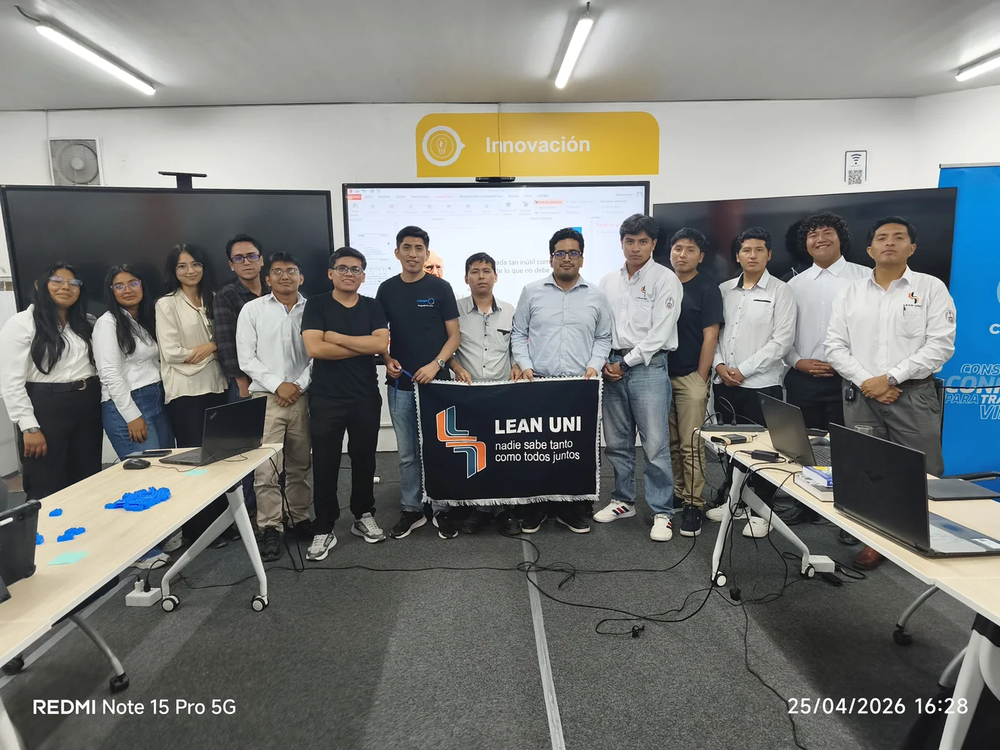
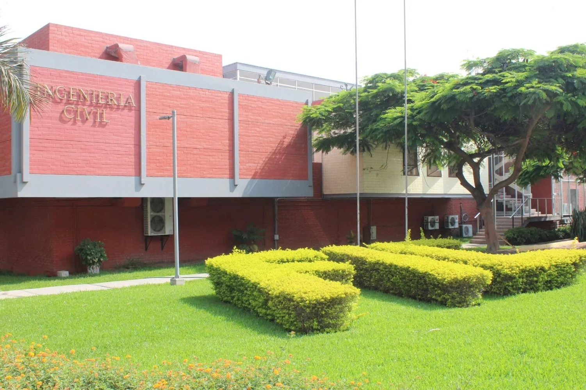

Lean UNI
Vicepresidente · Directiva 2026
Coordinación de actividades académicas, difusión de Lean Construction, VDC, BIM y vinculación con profesionales.
Liderazgo y participación
Comunidades, representación estudiantil, reconocimientos y voluntariado que han fortalecido mi liderazgo, capacidad de organización y vocación de servicio.
Liderazgo y comunidades
Vicepresidente · Directiva 2026
Coordinación de actividades académicas, difusión de Lean Construction, VDC, BIM y vinculación con profesionales.
FIC-UNI · 2022–2023
Representación estudiantil, coordinación del código y desarrollo de liderazgo, comunicación y organización.

Miembro destacado
Participación activa en iniciativas vinculadas con gestión, tecnología y construcción.

Miembro
Participación en espacios orientados al liderazgo, desarrollo personal y compromiso con el país.
Logros y reconocimientos
Propuesta desarrollada en equipo, reconocida por su innovación y compromiso.
Reconocimiento internacional al impacto y planteamiento de la propuesta.
Aplicación de análisis, diseño estructural y trabajo colaborativo.
Reconocimiento al rendimiento académico en Ingeniería Civil.
Reconocimiento al compromiso y aporte al grupo estudiantil.
Participación en espacios de formación, intercambio y debate.
Principio personal
“El orden es la primera ley del universo; la disciplina y la limpieza hacen posible el progreso.”
Voluntariado
Patronato UNI · Mentor
Acompañamiento a dos estudiantes de primeros ciclos de Ingeniería Civil, orientándolos en su adaptación, organización y formación inicial.
VOLAR · Enseña Perú · Sembrando Cultura
Participación en actividades de mentoría y acompañamiento educativo.
PMI
Apoyo en la organización y coordinación de actividades y exposiciones.
CONEIC
Colaboración en actividades de difusión, coordinación y soporte comercial del congreso.
Vida universitaria
Una selección inicial que podrá ampliarse con concursos, voluntariados, fútbol y momentos de la vida universitaria.

